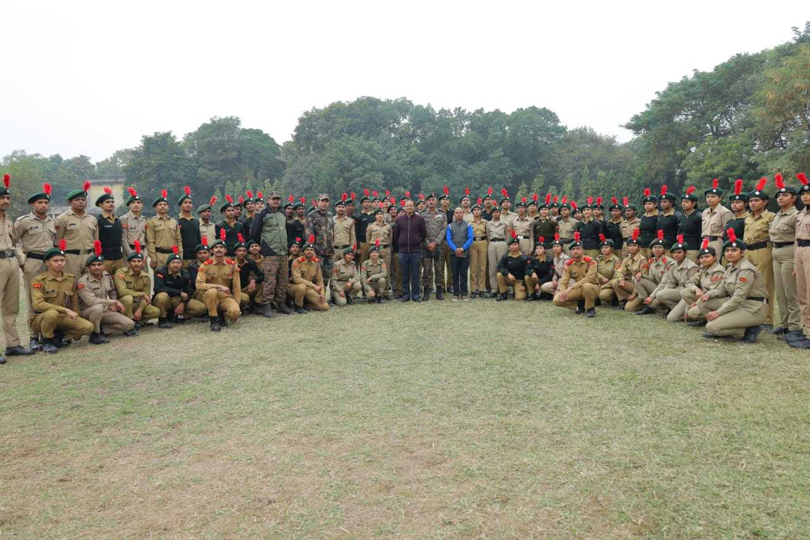
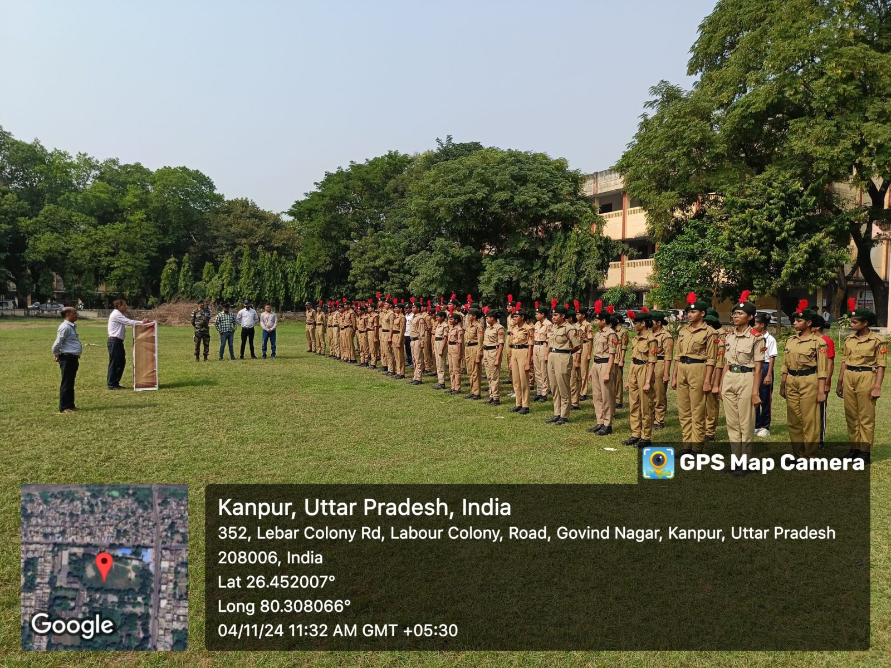
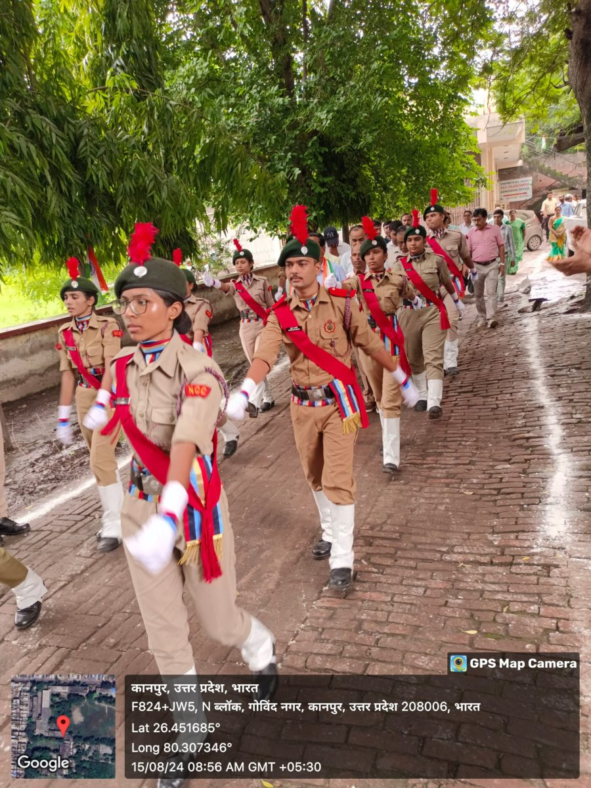

The National Cadet Corps (NCC) unit at D.B.S. College plays a vital role in instilling discipline, leadership, and patriotism among students. Through various drills, camps, and social service activities, the NCC cadets actively contribute to community welfare and national unity. The college regularly organizes NCC parades, awareness drives, and training sessions for enrolled students.


